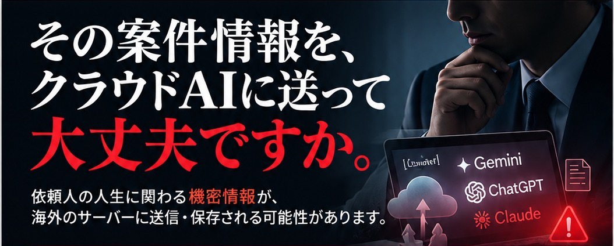

破産・再生の案件なら
債権者から届く資料をまとめ、債権者一覧表の作成を支援。
収入・支出や財産の情報も、一覧に整理します。
資料の転記・集計を減らし、案件の検討に時間を。

氏名・住所・連絡先
相談内容・家族情報など
入力する情報を確認
書面・写真・PDF
音声データなど
利用先と保存先を確認
未提出の書面案
起案中の方針など
外部への送信範囲を確認
サービスごとに異なる
データの取り扱い
保存・利用条件を確認
案件情報を外部クラウドAIへ送信しない、事務所内AI。
カスタマイズ対応事務所ごとに必要な機能を
ご相談いただけます。
TEL00-0000-0000
定型作業はAIに、判断は先生に。
機密情報を外部クラウドAIへ送信せず、
先生と事務職員の皆さまの資料整理・書面作成を支援します。
債権者から届く資料をまとめ、債権者一覧表の作成を支援。
収入・支出や財産の情報も、一覧に整理します。
資料の転記・集計を減らし、案件の検討に時間を。
面談メモや収入・財産の資料を整理し、
申立書の下書きや、財産分与に向けた財産の一覧づくりを支援。
相談内容を整理して、書面にまとめる負担を軽く。
戸籍や財産の資料から、相続人・遺産の情報を整理。
相続関係図の案や、遺産分割の申立書づくりを支援します。
何通もの資料を読み合わせ、書き写す手間を減らすために。
※事務所の書式・業務に合わせた設定・追加開発を含む活用例です。
対応範囲・読み取り精度は資料をもとに確認します。
AIの出力は先生・事務職員の皆さまが確認し、法的な判断は先生が行います。
ご相談からPoC（導入前のお試し検証）まで無料。
「この業務にも使える？」から、お聞かせください。
実際の使い方を確かめてから、導入をご検討いただけます。
※無料検証の対象・範囲は事前にご相談。本導入・機材費は別途。